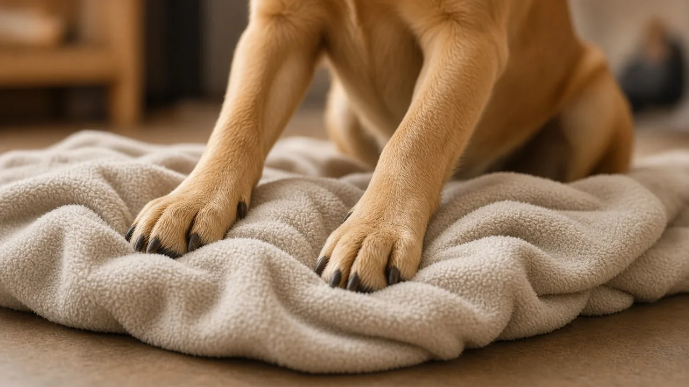

Why do dogs circle before lying down? The evidence is thin
Dogs circling once or twice before lying down is one of the most common and most asked about dog behaviors, yet it has almost no published science behind it. A search of the research turns up no peer reviewed study that set out to explain it. The one actual experiment, reported only in a magazine blog and never published in a journal, found dogs circled far more often on a lumpy surface than a smooth one, which fits a comfort explanation better than the popular idea that dogs are scanning for danger, an idea nobody has ever tested.

A common behavior with almost no published research
Turning around once, twice or more before curling up to rest is one of the most familiar things dogs do, so it is reasonable to expect a body of research explaining it. There is not one. Psychologist Stanley Coren, who studies dog cognition and behavior, wrote in a 2016 Psychology Today column that his search of the published research found no studies that specifically addressed this circling, apart from the separate and much rarer cases where excessive, prolonged circling is a sign of obsessive compulsive disorder in a small number of dogs. The explanations people repeat, that a dog is checking for danger, chasing off pests, flattening grass into a nest, marking the spot with paw scent, finding the direction of the wind, or adjusting its temperature, are older folk ideas rather than tested findings.
The one real experiment: comfort versus a smooth floor
Coren decided to test the nest making idea directly: if dogs circle to flatten an uneven surface, they should circle less on a surface that has nothing to flatten. He set up a small pen with two floor conditions, a flat, densely woven carpet and a loosely woven shag carpet left lumpy and uneven on purpose, and watched 62 pet dogs (31 per surface) to see whether each one turned a full circle before lying down. On the smooth carpet, 19% of dogs circled at least once before lying down. On the uneven shag carpet, 55% did, and dogs on the shag carpet were also far more likely to circle more than once; some poked or dug at the surface first, which no dog did on the smooth carpet. Coren reported this as a large, statistically significant difference and concluded that making a more comfortable, nest like surface is at least one real reason dogs circle, while being careful to say his data cannot rule out every other explanation.

This remains the only identified experimental test of why dogs circle before lying down. It was reported in Coren's own magazine column, not in a peer reviewed journal, and the sample was modest: 62 dogs tested at one dog show. That does not make the finding wrong, but it means "what studies show" here really means "what one unpublished test, by one researcher, suggests."
The "safety scan" idea: popular, but never tested
In April 2026, Coren revisited the topic after a reporter told him an "expert" had said the newest data showed circling was an instinctual safety check: dogs taking a last look around for predators before lying down in a vulnerable position, and that an online AI tool had repeated the claim as settled fact. Coren could not get a journal reference for it, because there is not one. He pointed out that the predator scanning idea, the scent marking idea, the idea that dogs position themselves to catch scent on the wind, and the idea that circling helps regulate body temperature by uncovering cooler or warmer ground all lack any experimental data. Only the comfort hypothesis has an actual test behind it, and that test is his own. A claim being repeated often, including by an AI summary, is not the same as it being supported by research.
What Darwin noticed in 1872
The behavior is old news to observers. In The Expression of the Emotions in Man and Animals, Charles Darwin described dogs on a carpet or other hard surface turning round and round and scratching at the ground with their forepaws "as if they intended to trample down the grass and scoop out a hollow," a leftover, he guessed, from wild ancestors that lived on open, grassy ground. Oddly, Darwin noted that keepers at the Zoological Gardens who watched jackals and fennecs treat their straw this way had never, after months of observing, seen the wolves there do the same, a detail that sits awkwardly with the common claim that this is simply "wolf behavior" carried over into dogs. Darwin also mentioned one dog that reportedly circled a full 13 times before settling, a reminder that individual dogs vary enormously in how much they turn.
When circling is not about getting comfortable
A quick turn before lying down is normal and not a reason to worry. Watch for a different pattern instead. The Merck Veterinary Manual lists circling in one direction as a possible sign of disease in the cerebrum or diencephalon (the higher brain centers), separate from a head tilt, which points more toward the vestibular system or cerebellum. Dogs with idiopathic vestibular syndrome, most often older dogs, can develop a sudden head tilt, loss of balance and circling or falling to one side, usually easing within days to a few weeks. Repeated, prolonged circling that looks compulsive, or a dog that seems unable to settle or get comfortable at all, can also point to pain such as arthritis rather than an ordinary bedtime routine. None of this describes the ordinary single turn most dogs do before a nap, but a sudden change, circling that stays in only one direction, stumbling, or circling that will not stop is a reason to call your vet rather than wait it out.
What this means for owners
- One or two turns before lying down is normal. It is one of the least studied common dog behaviors, and the best available evidence points to comfort, not vigilance.
- Be skeptical of confident "the science shows" claims about this behavior, including from AI summaries. As Coren found out in 2026, a claim can sound authoritative and still have no study behind it.
- Watch the pattern, not the behavior itself. A dog that struggles to settle, circles repeatedly in one direction, or shows a new head tilt or stumbling needs a vet visit, not just a more comfortable bed.
- Give dogs room to settle their own way. A bed big enough to turn around in, with bedding that can be nosed into shape, lets dogs do what looks like a very old habit, whatever its exact origin turns out to be.
Frequently asked questions
Why do dogs circle before lying down?
Nobody knows for certain. The only experiment that has tested it found dogs circled more often on an uneven, lumpy surface than a smooth one, which fits a comfort or nest making explanation better than the popular idea that dogs are scanning for danger, an idea that has never actually been tested.
Is there scientific research on dogs circling before lying down?
Very little. A 2016 search by psychologist Stanley Coren found no published studies on it. The only data come from his own unpublished test of 62 dogs, reported in a magazine column rather than a peer reviewed journal.
Do dogs circle to check for danger before lying down?
That is a popular idea, repeated by some articles and AI summaries, but it has never actually been tested. The comfort explanation, backed by an actual (if small and unpublished) experiment, is better supported.
Did Darwin write about dogs turning in circles?
Yes. In 1872, Charles Darwin described dogs scratching and turning before lying down as if trampling down grass, a habit he guessed came from wild ancestors, though he also noted zoo keepers had never seen wolves do the same thing.
Should I worry if my dog circles a lot before lying down?
A single turn or two is normal. Repeated circling in only one direction, stumbling, a new head tilt, or a dog that cannot seem to settle can point to vestibular disease, pain or a compulsive disorder, so call your vet rather than assuming it is just a bedtime habit.
Sources
- Coren S (27 January 2016). Why Do Dogs Turn in Circles Before Lying Down? Canine Corner (magazine blog, not a peer reviewed journal), Psychology Today
- Coren S (28 April 2026). Why Do Dogs Circle Before Lying Down? An Experimental Test. Canine Corner (magazine blog, not a peer reviewed journal), Psychology Today
- Darwin C (1872). The Expression of the Emotions in Man and Animals, Chapter 1 (on dogs turning round before lying down), Darwin Online, public domain text
- The Neurologic Evaluation of Dogs, Merck Veterinary Manual (dog owner version)
- Mertens A, Schenk H, Volk H (2023). Current definition, diagnosis, and treatment of canine and feline idiopathic vestibular syndrome. Frontiers in Veterinary Science 10:1263976. DOI 10.3389/fvets.2023.1263976, Frontiers (open access)
General education only, not veterinary advice. If you are worried about your dog, contact your vet; in an emergency, contact an emergency vet straight away.